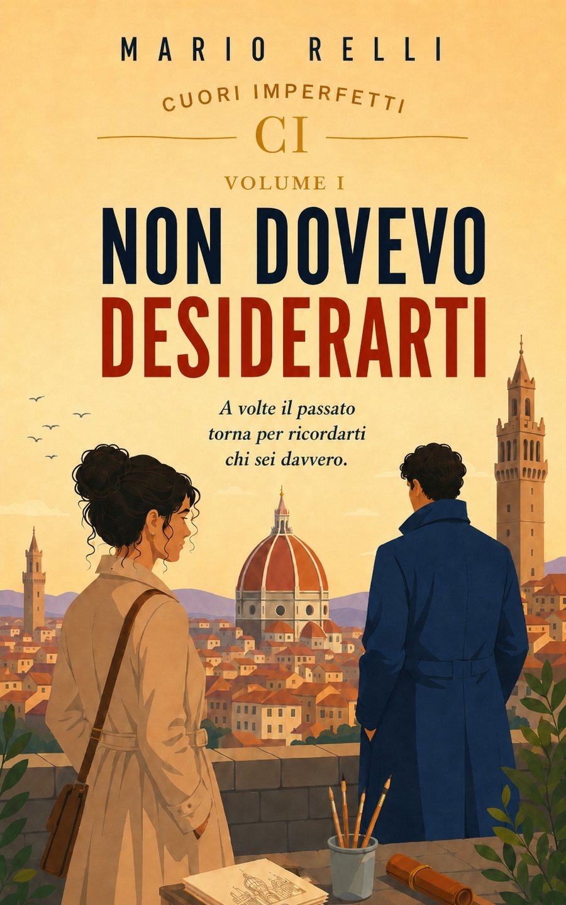
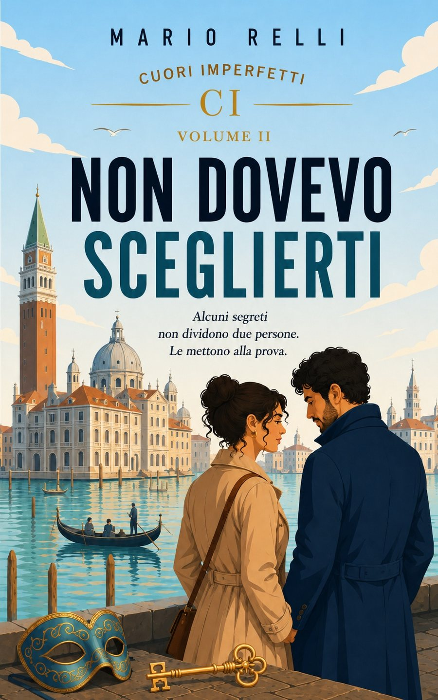

Tre romanzi collegati, un unico universo emotivo. Storie di amore, paura e seconde possibilità che si intrecciano tra Firenze, Venezia e Roma.
Restaura affreschi antichi con la stessa cura con cui protegge se stessa: lentamente, un dettaglio alla volta. Ha imparato a non fidarsi delle promesse — ma non a smettere di desiderarle.
Costruisce spazi con la stessa pazienza con cui resta accanto a chi ama, senza forzare mai un passo. Riservato e ironico, sa vedere ciò che gli altri nascondono — e sa aspettare che siano pronti a mostrarlo.

A volte il passato torna per ricordarti chi sei davvero.
Tornare a Firenze avrebbe dovuto significare ricominciare, non innamorarsi.
Elena Rinaldi ha imparato a non fidarsi delle promesse e a tenere sotto controllo tutto ciò che potrebbe ferirla di nuovo. Quando accetta di restaurare un antico affresco in un palazzo vicino all'Arno, vuole soltanto rimettere ordine nella propria vita e lasciarsi il passato alle spalle. Poi incontra Lorenzo, un uomo paziente, attento e fin troppo capace di vedere ciò che Elena cerca di nascondere. Non forza le sue difese, ma le rimane accanto abbastanza a lungo da renderle sempre più difficili da sostenere.
Tra le stanze del cantiere, le passeggiate lungo il fiume e un'attrazione che nessuno dei due riesce più a ignorare, Elena comincia a desiderare proprio ciò da cui aveva promesso di proteggersi. Ma quando il passato torna a reclamare il suo spazio, dovrà decidere se continuare a fuggire o rischiare finalmente di restare.

Alcuni segreti non dividono due persone. Le mettono alla prova.
Dopo tutto quello che hanno vissuto, Elena e Lorenzo pensavano che il peggio fosse passato. Si sbagliavano.
Quando un nuovo incarico li conduce a Venezia, tra le sale silenziose di Palazzo Contarini, riaffiorano tracce dimenticate che sembrano legate alla madre di Elena e a un passato rimasto sepolto troppo a lungo.
Ogni scoperta apre nuove domande. Ogni risposta incrina la fiducia che Elena aveva costruito con fatica. Perché Lorenzo sembra conoscere quel luogo meglio di quanto abbia mai ammesso? E perché continua a proteggerla... anche a costo di nasconderle la verità?
Tra canali avvolti dalla nebbia, antichi affreschi e segreti custoditi da decenni, Elena dovrà scegliere se continuare a difendersi dal dolore o rischiare tutto per l'uomo che ama. Ma ci sono verità capaci di unire due persone. E altre che possono dividerle per sempre.
Per ritrovare la verità, bisogna avere il coraggio di perdere tutto.
Dopo Venezia, Elena e Lorenzo tornano a Roma convinti che conoscere la verità sia stato il passo più difficile. Si sbagliano.
Tra loro è rimasto qualcosa di fragile: una fiducia da ricostruire, parole arrivate troppo tardi e la paura che il bisogno di proteggersi finisca per separarli proprio adesso che hanno imparato ad amarsi.
Quando una fotografia scattata sul Lungotevere viene lasciata sotto la porta di Elena, il passato smette di essere un ricordo. Qualcuno conosce i suoi movimenti, la storia della sua famiglia e il punto esatto in cui colpire. Più Elena cerca risposte, più diventa difficile capire chi stia cercando di aiutarla e chi, invece, voglia spingerla nella direzione sbagliata.
Per non perdersi, dovranno affrontare ciò che entrambi temono di più: la verità, quando arriva troppo tardi, e l'amore, quando non basta prometter di restare.
I tre volumi sono romanzi collegati: si possono leggere uno dopo l'altro, seguendo Elena e Lorenzo da Firenze a Venezia fino a Roma, per vivere fino in fondo la loro storia.
Vedi tutti i libri su Amazon